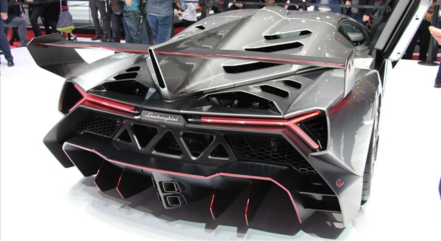
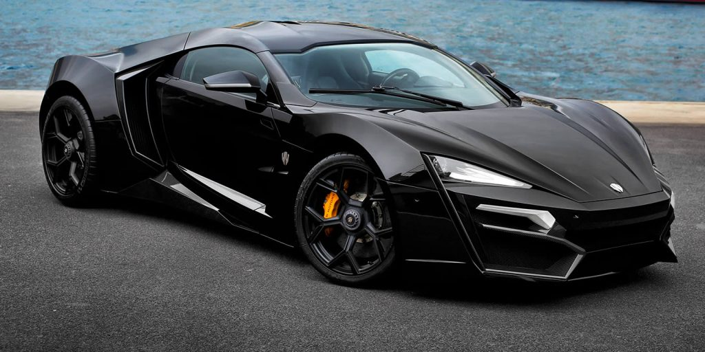

La scelta di auto di lusso – potremmo anche dire d’eccezione – è ampia e limitata … è tutta una questione di punti di vista. Dalle Lamborghini alle Bugatti, Ferrari o Aston Martin per arrivare alla Porsche. Ma quali sono le auto più costose al mondo? Leggendo questo articolo scoprirai le 5 macchine più costose di sempre. Criteri come velocità, tecnologia o design si uniscono in una battaglia spietata tra i produttori di queste auto a prezzi sempre più sconcertanti, le quali sono riservate a milionari o addirittura miliardari. La concorrenza, come i prezzi, si sta facendo più dura da quando, attraverso le manifestazioni automobilistiche del 2016, tra cui il Salone di Ginevra, i nuovi contendenti hanno potuto unirsi alla cerchia ristretta e selettiva delle auto più elitarie al mondo. Questo è il caso, ad esempio, della Bugatti Chiron, che ha battuto la Bugatti Veyron come l’auto di produzione più costosa al mondo. Il trono, nel frattempo, appartiene ancora alla Lamborghini Veneno.
Dotata di V12 6.5 l con 750 cavalli, la Lamborghini Veneno Roadster è al primo posto nella nostra classifica. E se è vero che ora beneficia di due archi per fornire maggiore sicurezza ai suoi passeggeri – che ha portato il suo peso a 1.490 kg ( 40 kg in più) – le sue capacità in termini di l’accelerazione e la velocità massima rimangono comunque spettacolari: da 0 a 100 km / h in soli 2,9 secondi, per una velocità massima di 355 km / h. Prodotto in sole 9 copie, il suo prezzo è altrettanto spettacolare: 3,3 milioni di euro tasse escluse.

La Lamborghini Veneno, nel frattempo, è equipaggiata anche con V12 6.5 l 750 cv, ma pesa 40 kg in meno rispetto alla Roadster, che garantisce un’accelerazione da 0 a 100 km / h in soli 2,6 secondi (3 in meno), per una velocità massima sempre di 355 km / h. Il regalo che il marchio di lusso ha offerto per il suo cinquantesimo anniversario nel 2013 è prodotto in sole 3 copie, il cui prezzo è di 3 milioni di euro tasse escluse.
Ferrari completa la nostra top 3 con il suo modello Sergio Pininfarina prodotto in 6 copie in omaggio al famoso designer, scomparso nel 2012. Equipaggiato con V8 4.497 cm3, la cui potenza è stata aumentata a 605 CV, consente un’accelerazione da 0 a 100 km / h in 3 secondi. Per quanto riguarda il suo prezzo, è di 3 milioni di euro. Per questo, condivide il secondo posto nella nostra classifica con la Lamborghini Veneno.

Presentato allo show del Qatar nel gennaio 2013, il Wans Lykan HyperSport beneficia non solo di un design in carbonio sublime ma anche di un meccanico firmato RUF, il famoso specialista tedesco. A questo proposito, è equipaggiato con il biturbo da 750 CV. che assicura un’accelerazione da 0 a 100 km / h in 2,8 secondi e una velocità massima di 395 km / h. Il prezzo di questa rara delizia è di 2,5 milioni di euro.
La Bugatti Chiron è ora a capo delle auto di produzione più costose del mondo, davanti alla Bugatti Veyron. Infatti, con i suoi 1500 CV. e con i suoi 420 km / h alla massima velocità, Chiron scivola nella nostra top 5 con un prezzo da capogiro: da 2,4 milioni di euro.